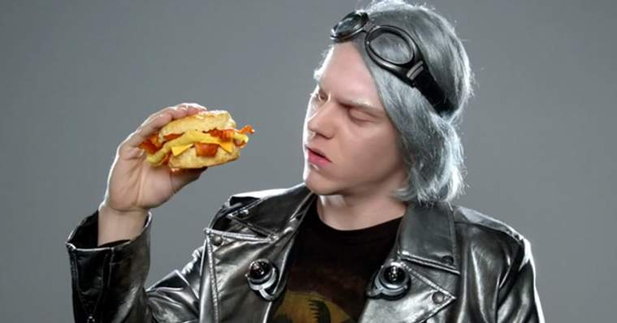

Feiticeira Escarlate/Wanda Maximoff
A Feiticeira Escarlate é retratada por Elizabeth Olsen no Universo Cinematográfico da Marvel. Como os quadrinhos desde 2015, a versão do UCM de Wanda é uma mulher nascida com um talento para a magia que mais tarde teve esse poder aprimorado por meio de experimentação científica.
Veja mais.

Mercurio Televisão
Mercúrio apareceu no segmento "Capitão América" da série animada The Marvel Super Heroes, com a voz fornecida poe Len Carlson. Nesta versão, ele é um membro dos Vingadores. Mercúrio apareceu em três episódios de X-Men: Animated Series, como um membro da Irmandade de Mutantes, onde contracenava com Groxo, Blob e Avalanche. Teve a voz fornecida por Adrian Egan e Paul Haddad.
Veja mais.